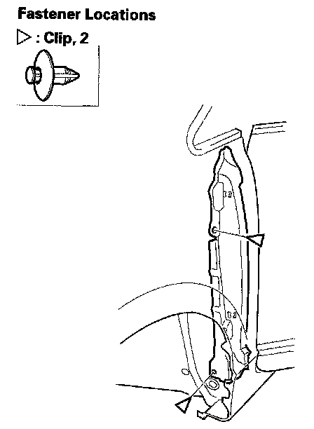
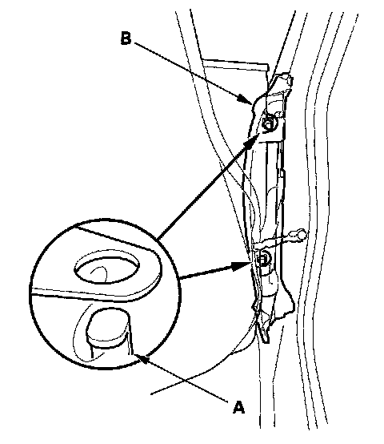
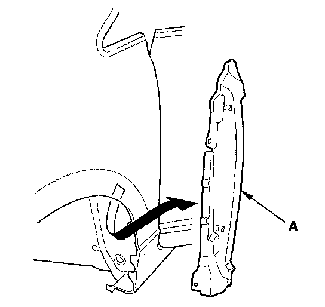

Front Fender Fairing Replacement
Front Fender Fairing Replacement1. Remove the front inner fender as needed.

2. From the wheel arch, remove the clips.

3. Open the front door. Detach the hooks (A) securing the front fender fairing (B).

4. Remove the front fender fairing (A).
5. Install the fender fairing in the reverse order of removal, and note these items:
- Check if the clips are damaged or stress-whitened, and if necessary, replace them with new ones.
- Push the clips and hooks into place securely.